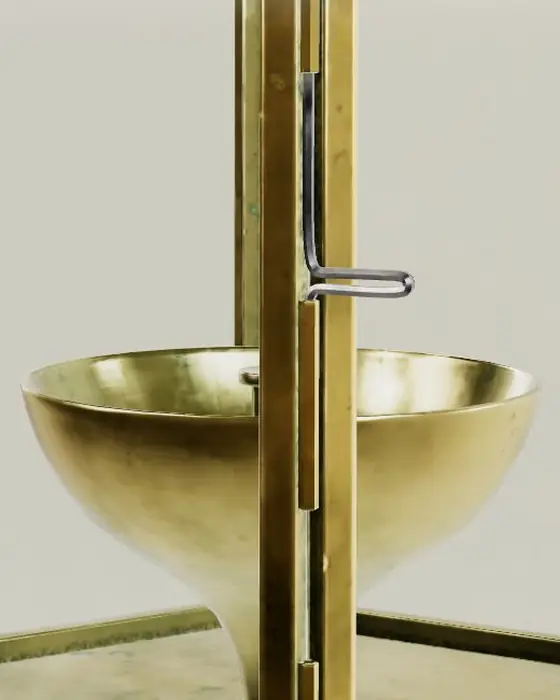
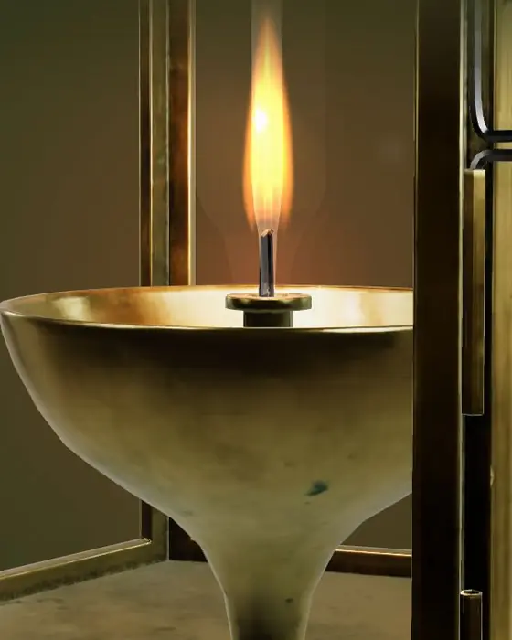
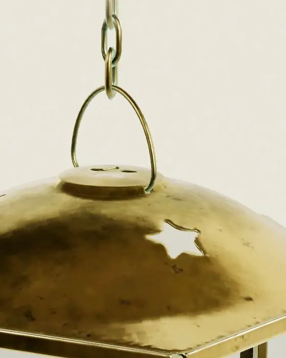

Home goods · Concept N007
Light it by hand.
A brass diya on a chain, six panes of glass around one small flame. Tap it, or press the button, and it lights.
How it is made
Three steps, one lantern.

Cast
The six-sided body is cast in brass and left to darken, so the patina settles into every corner and edge.

Glazed
One pane of glass goes into each side of the frame, so the flame shows from wherever you stand.

Pierced
Star-shaped vents are punched through the cap. Heat leaves through them and the light spills up the chain.
Lighting and care
Oil, wick, a match.
- Fill the bowl with ghee or sesame oil, about two thirds full.
- Set a cotton wick and trim it to a few millimetres so the flame stays small and steady.
- Light it and close the glass. Hang it away from curtains and out of a draught.
- Look after the brass with lemon and salt for a shine, or leave it to age.
- Body
- Brass, aged patina
- Panes
- Glass, one per side, six sides
- Cap
- Star-pierced vents
- Hangs from
- Brass chain and ring
- Burns
- Ghee or vegetable oil, cotton wick
- Note
- A concept product: no sizes or prices are given.
Reserve
Hold one for Diwali.
Choose a finish and the lantern above changes to match. Reservations on this page are a concept: nothing is sent and nothing is charged.